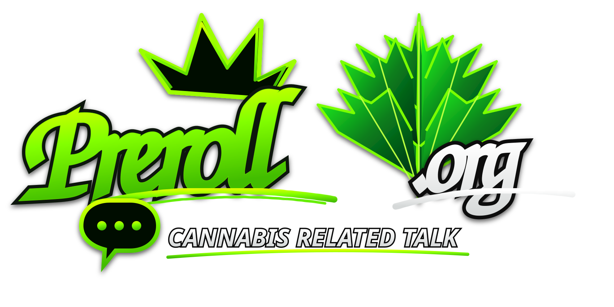

NYS Office of Cannabis Management
Main hub for adult-use, medical, and hemp regulation, licensing, and public information.
Visit ↗
AGE CHECK
Preroll.org is intended for adults of legal age. Educational content only.
TRANSPARENT DIRECTORY
Official, educational, research, and consumer resources with a strong New York focus. Every link is labeled with who runs it. Preroll.org does not sell products and has no commercial affiliation with any listed site.
Primary sources from the Office of Cannabis Management and other New York agencies.
Main hub for adult-use, medical, and hemp regulation, licensing, and public information.
Visit ↗How to find licensed dispensaries, product forms, timing of effects, and responsible use tips for adults 21+.
Visit ↗Rights, possession limits, home cultivation, taxes, and what is legal for adults 21+ in New York.
Visit ↗Guides on labels, lab COAs, edibles, concentrates, storage, CHS, and cannabis/fentanyl facts.
Visit ↗Printable materials on laws, safety, and medical cannabis in multiple languages. Free print orders available.
Visit ↗Patient and caregiver certification, rights, dispensary access, and practitioner resources.
Visit ↗Brochures, caregiver guides, registry ID info, and practitioner certification materials.
Visit ↗Equity plan, priority licensing goals, and support for communities disproportionately impacted by prohibition.
Visit ↗Public machine-readable data on licensed cannabis businesses (same feed used on our Market page).
Visit ↗Legal possession limits, licensed vs unlicensed shops, and where smoking/vaping is restricted in NYC.
Visit ↗Career pathways, education, job resources, and Responsible Workforce Training for the NY cannabis industry.
Visit ↗Evidence-based information and conversation tools for adults supporting young people.
Visit ↗Federal and other jurisdiction public-health sources.
U.S. Centers for Disease Control overview of cannabis, health effects, and public-health guidance.
Visit ↗Research pathway, approved cannabis-related drugs, and quality considerations for clinical research.
Visit ↗Evidence-based recommendations to reduce health risks for people who choose to use cannabis.
Visit ↗Practical tips on delay of onset, potency, frequency, and route of administration.
Visit ↗Practical, non-judgmental information for adults who use or are considering use.
Public education tools, knowing-your-limits guides, and evidence summaries on cannabis.
Visit ↗Youth- and adult-facing booklets on harm reduction, context, and guided conversations.
Visit ↗Evidence-informed curricula and resources focused on youth awareness and decision-making.
Visit ↗Safer-use guides, Cannabis 101 PDFs, and links to national prevention resources.
Visit ↗State education library and concentration / health-risk materials.
Visit ↗Primary literature and major reviews. Read studies carefully; findings are often limited or mixed.
Free search of biomedical literature. Tens of thousands of cannabis-related papers are indexed here.
Visit ↗Major evidence review from the National Academies of Sciences, Engineering, and Medicine.
Visit ↗Federal research institute pages on cannabis science, effects, and research programs.
Visit ↗Broad academic search across journals, theses, and books.
Visit ↗Commercial directories. Useful for names and menus; treat health claims with caution. Not affiliated with preroll.org.
Strain database, effects tags, and dispensary listings. User-generated and brand content mixed with editorial.
Visit ↗Dispensary maps, menus, and strain info. Marketplace platform with advertising.
Visit ↗Independent education network covering science, state law summaries, and harm-reduction style content.
Visit ↗If use is becoming a problem, these are starting points. Professional help is outside the scope of this site.
Free, confidential, 24/7 treatment referral and information service (1-800-662-HELP).
Visit ↗Family-focused resources and support around substance use, including cannabis.
Visit ↗Practical self-assessment guide from the Canadian Centre on Substance Use and Addiction.
Visit ↗Tools and pages built on preroll.org.
Licensed business data pulled from the official OCM open dataset.
OpenHow-to and education index from public sources.
OpenCatalog of public strain names and source links.
OpenPre-roll cost and edible serving math tools.
OpenEducational Q&A character on terpenes, labels, and terminology.
OpenCommunity discussions and reviews.
OpenThis list is not exhaustive. Suggest a credible source via the forum. Last reviewed: October 2026.